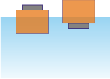

NO ME SALEN
EJERCICIOS RESUELTOS DE FÍSICA DEL CBC
FLUIDOS - PRINCIPIO DE ARQUÍMEDES |
|

|
| |
| FIS H. PREGUNTA 2- Un pequeño pedazo de acero está pegado a
un bloque de madera. Cuando la madera se coloca
en una pileta con agua, con el acero en la parte
superior, la mitad del bloque se sumerge.
Si el bloque se invierte, de manera que el acero
quede bajo el agua, ¿el volumen sumergido del
bloque, aumenta, disminuye o permanece igual? |
|
Otra pregunta sobre un fenómeno antiintuitivo. A ver... es sencillo y cortito, pero seguime con atención.
Sea cual sea la posición del conjunto siempre pesa lo mismo. Si pesa lo mismo el empuje también es el mismo. |
|
|
Y si el empuje es el mismo, también debe ser el mismo
¡el volumen de agua desplazada debe ser el mismo!
¿Y quién desplaza ese volumen de agua? En el primer caso solo madera. En el segundo caso el bloque de acero y un poco de madera, que lógicamente es menor que el anterior.
|
 |
|
|
|
| Acá tenés un ejercicio en el que se plantea lo mismo pero cuantitativamente. |
|
|
| DESAFÍO: Hablando de navegación... ¿qué es la sentina? |
|
 |
| Algunos derechos reservados.
Se permite su reproducción citando la fuente legítima, o sea, este sitio. Agradezco a Johanna Di Francesco por el envío de una errata. Última actualización
jun-11. Buenos Aires, Argentina. |
|
|
| | |
|
|